Problem description
As you know, the future release of the Software Factory project will be based on the Kubernetes deployment. On adding new services, there are more and more pods spawned on the Kubernetes cluster, which might raise some complications, when the test environment is limited. After a while, we spotted an issue, the CI jobs were failing for an unknown reason - sometimes a test was checking if the API is up and received a HTTP 503 error, sometimes pods were marked as Running, but were actually not ready. All of those errors were related to ReadinessProbe, StartupProbe or LivenessProbe, but from time to time we had the following error:
panic: Could not create &Secret{ObjectMeta:{nodepool-providers-secrets
sf 0 0001-01-01 00:00:00 +0000 UTC <nil> <nil> map[] map[] [] [] []},
Data:map[string][]byte{kube.config: [97 112 105 86 101 114 115 105 (...) 10],},
Type:,StringData:map[string]string{},Immutable:nil,}: etcdserver: request timed out
Initially the isssue occured rarely, but after a while, it happens more and more often.
What is etcd?
The etcd service is the "heart" of Kubernetes. It is: "A distributed, reliable key-value store for the most critical data of a distributed system" source. That service keeps track of the state of the whole Kubernetes cluster, its configuration, service statuses, and others. That service needs to be working without any issue or other components will be impacted and might not run properly.
As it was described in the error message above in the "Problem_description" paragraph, the error: etcdserver: request timed out might suggest that we had an issue with the "core" service of Kubernetes, so we performed a few tests to see why the etcd is not working properly in our CI jobs.
Testing environment
Most of our CI jobs related to the sf-operator project are spawning on a VM flavor with the following specs:
- 8 GB RAM
- 40 GB HDD disk
- 8 vCPUs
which is a very small part of the physical resources of the hypervisor. After pushing new changes to the Zuul CI, it can happen that all new jobs will be running on the same L0 host (that's how the cloud is working: instance is spawned on the hypervisor with "best score", so normally it should have very good performance. It can happen, that all compute hosts are overloaded, so the OpenStack Nova Scheduler will choose a host that has best score from all overloaded hosts, so it may affect the etcd perofmance), especially that some parts of the CI jobs are repeating:
- deploy Microshift,
- build an image,
- deploy services: it is pulling new images, storing them on the disk, etc.
It might happen that, at the same time, there can be many jobs doing the same operation, so that can take all disk resources, such as IO or R/W operations.
MicroShift
We are using the MicroShift tool for deploying the sf-operator. "MicroShift is an experimental flavor of OpenShift/Kubernetes optimized for the device edge. It targets the niche between minimal, standalone Linux edge devices and full-fledged OpenShift/Kubernetes edge clusters". source.
To deploy MicroShift, we developed an Ansible role, which you can find here on Github.
Is it hardware?
Let's have a theory: what if the disk is having troubles in our CI? First, what we check is how the monitoring metrics look for a specific cloud provider host (L0), on which the job was performed, and it raises an error.
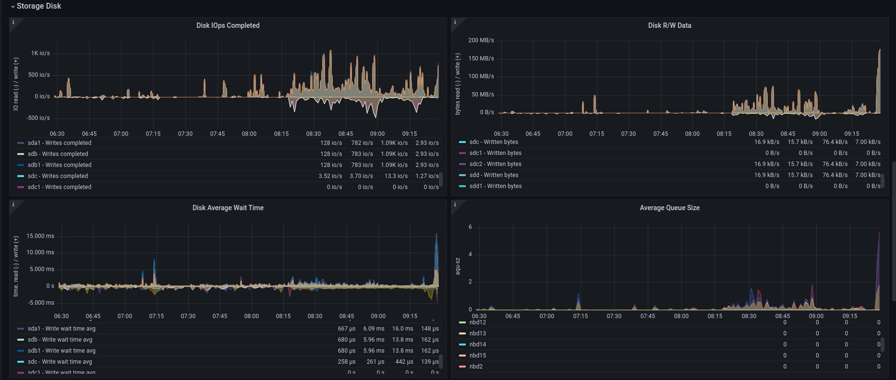The Grafana visualization shows that the disk IO is near 1K, which is very low for modern servers. A similar situation exists for the R/W operation: both are also low, but what if other operations done on the disk might affect etcd work? According to our cloud provider, our hypervisor's storage consists of 4 Intel 960 SSD disks mounted in software RAID10.
This caused us to have mixed feelings about whether the issue is really in the disk. So we decided to make some benchmarks.
Benchmarking servers
There are many tools that can check your disk's performance. Our focus was on two basic tests:
- fio
- phoronix tests suite
- etcd benchmark tool
Fio tool
How we test:
curl -LO https://github.com/rancherlabs/support-tools/raw/master/instant-fio-master/instant-fio-master.sh
bash instant-fio-master.sh
export PATH=/usr/local/bin:$PATH
mkdir test-data
fio --rw=write --ioengine=sync --fdatasync=1 --directory=test-data --size=100m --bs=2300 --name=mytest
Result was:
fio --rw=write --ioengine=sync --fdatasync=1 --directory=test-data --size=100m --bs=2300 --name=mytest
mytest: (g=0): rw=write, bs=(R) 2300B-2300B, (W) 2300B-2300B, (T) 2300B-2300B, ioengine=sync, iodepth=1
fio-3.35-115-g6795
Starting 1 process
Jobs: 1 (f=1): [W(1)][98.7%][w=1967KiB/s][w=876 IOPS][eta 00m:01s]
mytest: (groupid=0, jobs=1): err= 0: pid=160845: Wed Aug 16 05:56:49 2023
write: IOPS=618, BW=1388KiB/s (1421kB/s)(100.0MiB/73768msec); 0 zone resets
clat (usec): min=2, max=20824, avg=49.73, stdev=335.80
lat (usec): min=2, max=20824, avg=50.21, stdev=335.81
clat percentiles (usec):
| 1.00th=[ 6], 5.00th=[ 8], 10.00th=[ 9], 20.00th=[ 10],
| 30.00th=[ 11], 40.00th=[ 13], 50.00th=[ 14], 60.00th=[ 16],
| 70.00th=[ 17], 80.00th=[ 20], 90.00th=[ 29], 95.00th=[ 310],
| 99.00th=[ 490], 99.50th=[ 873], 99.90th=[ 2802], 99.95th=[ 4293],
| 99.99th=[20055]
bw ( KiB/s): min= 44, max= 2717, per=99.92%, avg=1387.57, stdev=770.12, samples=147
iops : min= 20, max= 1210, avg=617.98, stdev=342.89, samples=147
lat (usec) : 4=0.13%, 10=21.66%, 20=59.34%, 50=11.23%, 100=0.76%
lat (usec) : 250=0.40%, 500=5.53%, 750=0.38%, 1000=0.12%
lat (msec) : 2=0.25%, 4=0.13%, 10=0.03%, 20=0.01%, 50=0.01%
fsync/fdatasync/sync_file_range:
sync (usec): min=275, max=181677, avg=1564.33, stdev=4190.31
sync percentiles (usec):
| 1.00th=[ 367], 5.00th=[ 412], 10.00th=[ 441], 20.00th=[ 486],
| 30.00th=[ 537], 40.00th=[ 676], 50.00th=[ 938], 60.00th=[ 1074],
| 70.00th=[ 1254], 80.00th=[ 1549], 90.00th=[ 2343], 95.00th=[ 3458],
| 99.00th=[ 19792], 99.50th=[ 27132], 99.90th=[ 55837], 99.95th=[ 76022], ### <<<=== here is 99.00th
| 99.99th=[128451]
cpu : usr=0.49%, sys=3.04%, ctx=165143, majf=0, minf=14
IO depths : 1=200.0%, 2=0.0%, 4=0.0%, 8=0.0%, 16=0.0%, 32=0.0%, >=64=0.0%
submit : 0=0.0%, 4=100.0%, 8=0.0%, 16=0.0%, 32=0.0%, 64=0.0%, >=64=0.0%
complete : 0=0.0%, 4=100.0%, 8=0.0%, 16=0.0%, 32=0.0%, 64=0.0%, >=64=0.0%
issued rwts: total=0,45590,0,0 short=45590,0,0,0 dropped=0,0,0,0
latency : target=0, window=0, percentile=100.00%, depth=1Run status group 0 (all jobs):
WRITE: bw=1388KiB/s (1421kB/s), 1388KiB/s-1388KiB/s (1421kB/s-1421kB/s), io=100.0MiB (105MB), run=73768-73768msec
Disk stats (read/write):
vda: ios=4601/115020, sectors=73144/639377, merge=1/796, ticks=5288/85834, in_queue=122603, util=97.44%
To explain those results in a few words: In 99, it has 19792, so it means 19.79 ms, and it is recommended to have below 10 ms source.
The result was very similar for different hypervisors, but still, we cannot assume, that it is a disk issue, but these results support this theory.
Just to compare results for fio, where storage is on RAM disk:
fio --rw=write --ioengine=sync --fdatasync=1 --directory=/home/zuul-worker/etcd/data/fio --size=100m --bs=2300 --name=mytest
mytest: (g=0): rw=write, bs=(R) 2300B-2300B, (W) 2300B-2300B, (T) 2300B-2300B, ioengine=sync, iodepth=1
fio-3.35-138-g50b94
Starting 1 process
mytest: Laying out IO file (1 file / 100MiB)
mytest: (groupid=0, jobs=1): err= 0: pid=10092: Mon Oct 16 10:06:06 2023
write: IOPS=451k, BW=990MiB/s (1038MB/s)(100.0MiB/101msec); 0 zone resets
clat (nsec): min=621, max=568765, avg=1370.13, stdev=6496.39
lat (nsec): min=670, max=568835, avg=1430.42, stdev=6498.82
clat percentiles (nsec):
| 1.00th=[ 668], 5.00th=[ 668], 10.00th=[ 684], 20.00th=[ 692],
| 30.00th=[ 924], 40.00th=[ 1128], 50.00th=[ 1176], 60.00th=[ 1208],
| 70.00th=[ 1288], 80.00th=[ 1544], 90.00th=[ 2024], 95.00th=[ 2320],
| 99.00th=[ 3312], 99.50th=[ 4192], 99.90th=[ 14528], 99.95th=[ 35072],
| 99.99th=[452608]
lat (nsec) : 750=28.18%, 1000=6.13%
lat (usec) : 2=54.33%, 4=10.81%, 10=0.34%, 20=0.14%, 50=0.05%
lat (usec) : 100=0.01%, 250=0.01%, 500=0.02%, 750=0.01%
fsync/fdatasync/sync_file_range:
sync (nsec): min=200, max=109123, avg=259.84, stdev=608.43
sync percentiles (nsec):
| 1.00th=[ 211], 5.00th=[ 221], 10.00th=[ 221], 20.00th=[ 221],
| 30.00th=[ 221], 40.00th=[ 221], 50.00th=[ 231], 60.00th=[ 231],
| 70.00th=[ 241], 80.00th=[ 302], 90.00th=[ 330], 95.00th=[ 350],
| 99.00th=[ 382], 99.50th=[ 410], 99.90th=[ 660], 99.95th=[ 932],
| 99.99th=[12608]
cpu : usr=40.00%, sys=59.00%, ctx=0, majf=0, minf=11
IO depths : 1=200.0%, 2=0.0%, 4=0.0%, 8=0.0%, 16=0.0%, 32=0.0%, >=64=0.0%
submit : 0=0.0%, 4=100.0%, 8=0.0%, 16=0.0%, 32=0.0%, 64=0.0%, >=64=0.0%
complete : 0=0.0%, 4=100.0%, 8=0.0%, 16=0.0%, 32=0.0%, 64=0.0%, >=64=0.0%
issued rwts: total=0,45590,0,0 short=45590,0,0,0 dropped=0,0,0,0
latency : target=0, window=0, percentile=100.00%, depth=1
Run status group 0 (all jobs):
WRITE: bw=990MiB/s (1038MB/s), 990MiB/s-990MiB/s (1038MB/s-1038MB/s), io=100.0MiB (105MB), run=101-101msec
To explain that results in few words: In 99, it has 382 so it means 0.382ms. Result of that test was obvious, but in later part of that blog, I will be doing a test of etcd benchmark, where the data directory will be mounted on the RAM disk.
Phoronix test suite
How we test on Centos 9 stream:
sudo dnf install -y php-cli php-xml php-json git
git clone https://github.com/phoronix-test-suite/phoronix-test-suite && cd phoronix-test-suite/
sudo ./install-sh
sudo phoronix-test-suite run pts/etcd
We will not go into details here, but the results showed operational values that were much below expected values and didn't match minimal requirements for the etcd service. Whole results you can find here.
Etcd benchmark tool
The same benchmark is done in the Phoronix test suite, but the below playbook will just run single tests, and it might be helpful for those who don't want to use many scenarios, as the Phoronix test suite does.
To visualize the difference between etcd on RAM disk and on the SSD disk, I will run the etcd benchmark tool, by using the simple Ansible playbook:
- benchmark.yaml file
- name: Benchmark etcd
hosts: somehost.dev
vars:
# once it would be true, once false. Depends what test is done
etcd_ramdisk: true
ramdisk_size: 4096m
ramdisk_path: "~{{ ansible_user | default(ansible_user_id) }}/etcd/data"
etcd_version: 3.4.27
tasks:
- name: Install required packages
become: true
ansible.builtin.package:
name: golang
### RAMDISK
- name: Configure RAMDISK for etcd
when: etcd_ramdisk
block:
- name: Create directory for etcd
become: true
ansible.builtin.file:
path: "{{ ramdisk_path }}"
state: directory
mode: 0700
owner: "{{ ansible_user | default(ansible_user_id) }}"
group: "{{ ansible_user | default(ansible_user_id) }}"
- name: Mount ramdisk
become: true
ansible.posix.mount:
src: tmpfs
name: "{{ ramdisk_path }}"
fstype: tmpfs
state: mounted
opts: "defaults,size={{ ramdisk_size }}"
- name: Set proper permissions after mount
become: true
ansible.builtin.file:
path: "{{ ramdisk_path }}"
state: directory
mode: 0700
owner: "{{ ansible_user | default(ansible_user_id) }}"
group: "{{ ansible_user | default(ansible_user_id) }}"
- name: Set proper SELinux context
become: true
ansible.builtin.command: restorecon -F {{ ramdisk_path }}
- name: Create directory for etcd
ansible.builtin.file:
path: ~/etcd
state: directory
- name: Download etcd
ansible.builtin.get_url:
url: https://github.com/etcd-io/etcd/releases/download/v{{ etcd_version }}/etcd-v{{ etcd_version }}-linux-amd64.tar.gz
dest: /tmp/
mode: "0644"
- name: Unarchive etcd
ansible.builtin.unarchive:
src: "/tmp/etcd-v{{ etcd_version }}-linux-amd64.tar.gz"
dest: ~/etcd
remote_src: true
extra_opts:
- "--strip-components=1"
- name: Check if etcd is not already running
ansible.builtin.wait_for:
host: 127.0.0.1
port: 2379
state: started
delay: 0
timeout: 5
ignore_errors: true
register: _etcd_running
- name: Start etcd as subprocess
when: "'failed' in _etcd_running and _etcd_running.failed"
ansible.builtin.shell: >
~/etcd/etcd
--snapshot-count=5000
--auto-compaction-retention=10
--auto-compaction-mode=revision
--data-dir {{ ramdisk_path }}
&> ~/etcd.log
async: 7200
poll: 0
- name: Clone etcd repo
ansible.builtin.git:
repo: https://github.com/etcd-io/etcd
dest: ~/etcd-repo
version: "v{{ etcd_version }}"
- name: Install benchmark
ansible.builtin.shell: |
go install -v ./tools/benchmark
args:
chdir: ~/etcd-repo
# https://github.com/phoronix-test-suite/phoronix-test-suite/blob/master/ob-cache/test-profiles/pts/etcd-1.0.0/test-definition.xml
- name: Run benchmark
ansible.builtin.shell: >
~/go/bin/benchmark
--endpoints=127.0.0.1:2379
--target-leader
--conns=100
--clients=100
put
--key-size=8
--sequential-keys
--total=4000000
--val-size=256
&> ~/benchmark.log
args:
chdir: ~/etcd-repo
- inventory file
cat << EOF > inventory.yaml
---
all:
hosts:
somehost.dev
ansible_port: 22
ansible_host: myipaddress
ansible_user: centos
and then Ansible execution looks like:
ansible-playbook -i inventory.yaml benchmark.yaml
Results on ramdisk
4000000 / 4000000 100.00% 2m14ss
Summary:
Total: 134.9707 secs.
Slowest: 0.0322 secs.
Fastest: 0.0002 secs.
Average: 0.0032 secs.
Stddev: 0.0015 secs.
Requests/sec: 29636.0538
Response time histogram:
0.0002 [1] |
0.0034 [2465154] |∎∎∎∎∎∎∎∎∎∎∎∎∎∎∎∎∎∎∎∎∎∎∎∎∎∎∎∎∎∎∎∎∎∎∎∎∎∎∎∎
0.0066 [1405963] |∎∎∎∎∎∎∎∎∎∎∎∎∎∎∎∎∎∎∎∎∎∎
0.0098 [109453] |∎
0.0130 [16145] |
0.0162 [2288] |
0.0194 [535] |
0.0226 [279] |
0.0258 [145] |
0.0290 [31] |
0.0322 [6] |
Latency distribution:
10% in 0.0018 secs.
25% in 0.0023 secs.
50% in 0.0030 secs.
75% in 0.0039 secs.
90% in 0.0049 secs.
95% in 0.0058 secs.
99% in 0.0087 secs.
99.9% in 0.0126 secs.
Results on disk
4000000 / 4000000 100.00% 4m14ss
Summary:
Total: 254.7063 secs.
Slowest: 0.2208 secs.
Fastest: 0.0007 secs.
Average: 0.0063 secs.
Stddev: 0.0053 secs.
Requests/sec: 15704.3628
Response time histogram:
0.0007 [1] |
0.0227 [3964476] |∎∎∎∎∎∎∎∎∎∎∎∎∎∎∎∎∎∎∎∎∎∎∎∎∎∎∎∎∎∎∎∎∎∎∎∎∎∎∎∎
0.0447 [23334] |
0.0667 [6676] |
0.0887 [2932] |
0.1108 [782] |
0.1328 [639] |
0.1548 [259] |
0.1768 [672] |
0.1988 [178] |
0.2208 [51] |
Latency distribution:
10% in 0.0038 secs.
25% in 0.0045 secs.
50% in 0.0055 secs.
75% in 0.0068 secs.
90% in 0.0090 secs.
95% in 0.0109 secs.
99% in 0.0211 secs.
99.9% in 0.0753 secs.
How to handle such issues
To handle that problem, we decided to do two things at the same time, especially for the CI tests, which are:
- check if moving etcd to the ramdisk will help
- improve sf-operator, to retry updating the object when it causes an error
Moving etcd to the ramdisk
As it was mentioned, we are using a MicroShift for deploying Kubernetes. environment. With that commit, we added a feature to put the etcd on the ramdisk. We did not perform any tests to see if the result would be better, but we did not saw any error related to the etcd anymore.
Hypervisor stats
We have done an experiment to see how the hypervisor (L0 host) stats look like with etcd on the disk and on ramdisk.
NOTE: It was very difficult to provide good, equal visualization for both environments (ramdisk and disk), because as an OpenStack user, we were not able to block or disable host for future spawning of new instances there. It means that during the tests, it might be a situation where there were few other instances on the same host, which might use a disk.
on ramdisk - job has started 6:46 UTC / 8:46 CEST
There are only 2 instances spawned on same host
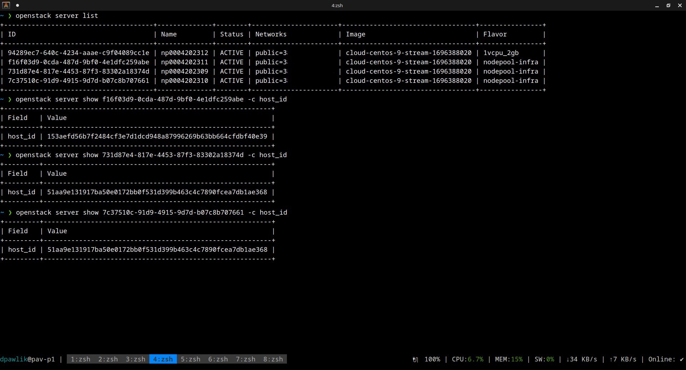CPU usage - ramdisk
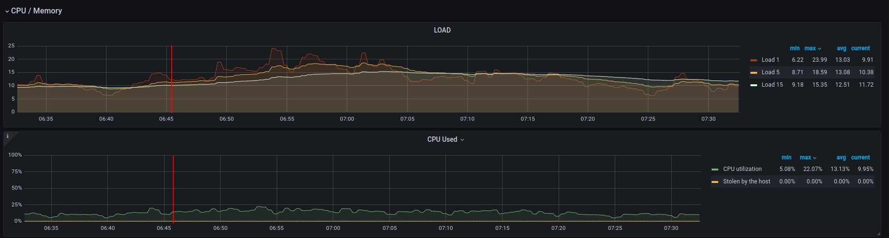Disk usage - ramdisk
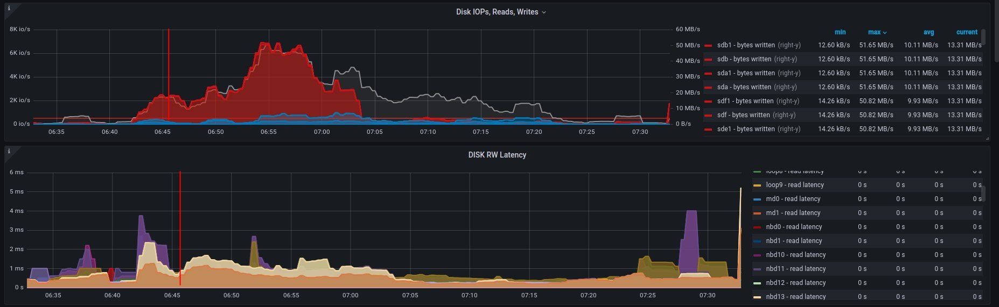Alternative visualizations for CPU - ramdisk
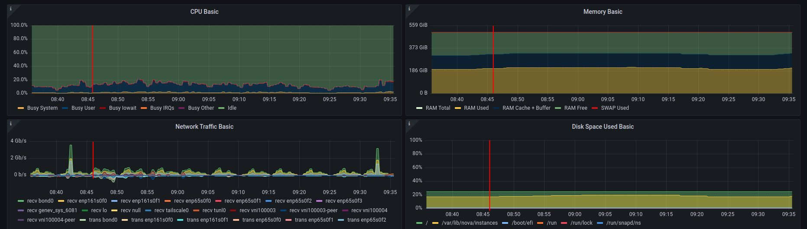Alternative visualization for disk - ramdisk
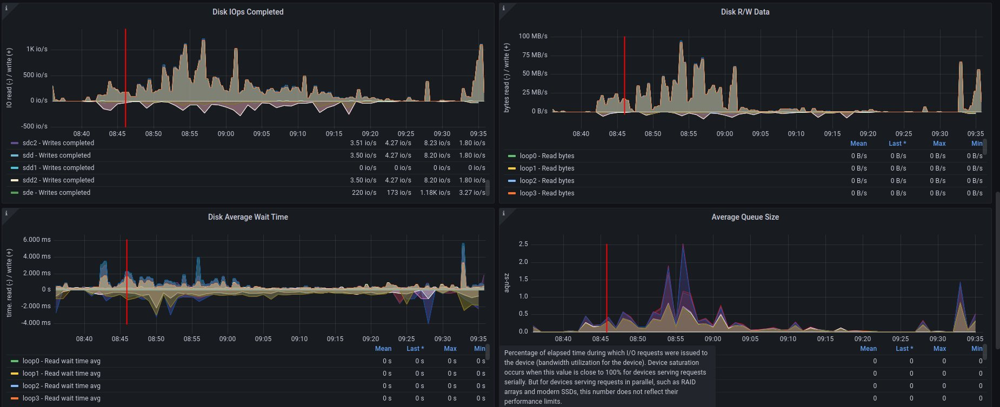and
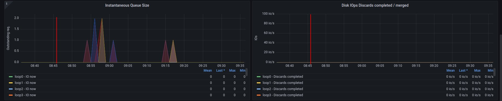2. on disk - job has started 6:18 UTC / 8:18 CEST
There are 3 instances spawned on same host. There were also one more VM, but it should not affect in tests results.
CPU usage - disk
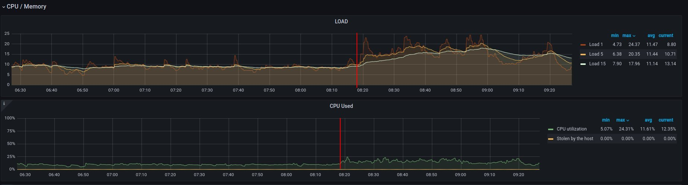Disk usage - disk
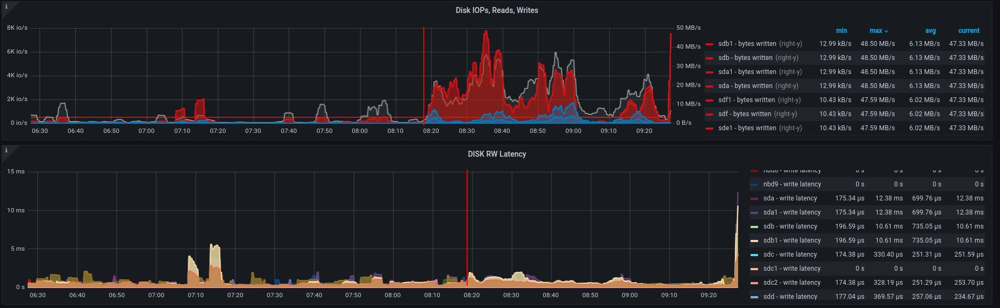Alternative visualizations for CPU - disk
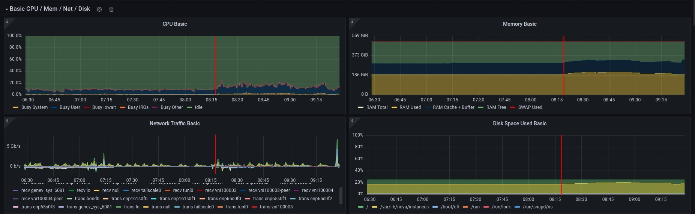Alternative visualization for disk - disk
and
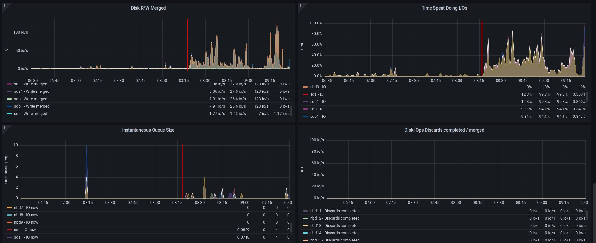Improvements in sf-operator
The main issue while running the reconcile loop was that the object should be updated, but it was not because of the high etcd (storage) utilization.
More about that issue will be explained in the next blog post.